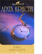

Кошка среди голубей

Оба романа, представленные в данном томе, можно смело отнести к жанру шпионского детектива. Действие "Кошки среди голубей " происходит в частной школе для девочек. Пуаро, дабы раскрыть преступление, придется разбираться в сложных взаимоотношениях школьных учителей. В романе "Часы" гениальному сыщику предстоит раскрыть целый ряд "чисто английских убийств". Самое жестокое из них - когда жертве сначала подсыпают в алкоголь яд, а затем убивают ножом. Может быть, множество показывающих разное время часов способно помочь разгадке?